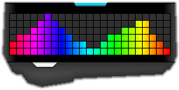

Logitech Spectrogram
Downloads |
Description |
Supported Devices |
Instructions |
Screenshots |
FAQ |
Changelog |
Credits
Description
This program displays an audio spectrogram on Logitech RGB Keyboards based on the audio currently playing on your computer. It also displays some basic lighting effects on Logitech RGB Mice and Headsets, with more effects planned. The spectrogram can be controlled using the Windows program or by using the ARX App on an Android or iOS mobile or tablet device.This program was the winner of Logitech's ARX Control Challenge.
Two demonstration videos are below:
For more videos, take a look at this playlist of user videos showing the Logitech Spectrogram program in action.
Supported Devices
The spectrogram is compatible with the Logitech devices listed below.Please note that this list is not exhaustive - even if your Logitech device is not listed here, it may be worthwhile to try the program anyway.
Keyboards
- Logitech G910 Orion Spark
- Logitech G810 Orion Spectrum
- Logitech G410 Atlus Spectrum
- Logitech G610 Orion Brown/Red*
- Logitech G510/G510S*
- Logitech G110*
- Logitech G19/G19S*
- Logitech G13*
Headsets
- Logitech G633 Artemis Spectrum
- Logitech G933 Artemis Spectrum
- Logitech G502 Proteus Spectrum
- Logitech G303 Daedalus Apex
- Logitech G600
- Logitech G300/G300S*
Devices with a star do not support some features required by the spectrogram (eg. per-key lighting, full RGB support) but should work to some degree.
Instructions
- Ensure that you meet the following requirements:
- Logitech Gaming Software (LGS) Version 8.55 or later
- Microsoft .NET 4.5.2 or later
- Microsoft Visual C++ Redistributable 2012 (if using a 64-bit OS, install both 32-bit and 64-bit)
- Windows Vista or later
- If you are using Windows 10 N or KN, you will need the Media Feature Pack for N and KN
- For other versions of Windows N or KN, you will need to download the Media Feature Pack for your version from Microsoft's website
- Ensure that the Logitech Gaming Software (LGS) is running in the background. The spectrogram will NOT work without it.
- Extract everything from the zip file you downloaded, then run "Logitech Spectrogram.exe" and click "Start Spectrogram".
- Adjust the spectrogram sensitivity (in the Settings tab) if the keyboard lighting is not responding as expected.
- The program may take a while to start when it is run for the first time. Windows SmartScreen may also prompt you to allow the program to run.
- The spectrogram does not use the G-Key (and Logitech logo) lights as the Logitech LED SDK does not provide a way to control those.
- Your settings across the program (eg. selected colors) will be saved for next time.
- If the spectrogram appears to be running slowly or lagging, consider closing the On-Screen Output Window, disabling mouse/headset effects and/or disabling the ARX Control App as this will improve performance.
- Quadraphonic Speaker Configurations are currently not supported. If you do happen to have a setup like this, tell me via Youtube/Logitech forums and I'll add support for it.
- Use this program at your own risk.
Screenshots
ARX Control App


Windows Program


Windows Program
Credits
CSCore Audio LibraryMouseKeyHook Library